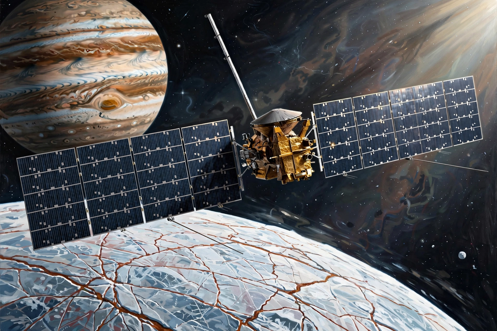

From Wikipedia, the free encyclopedia
| Europa Clipper | |
|---|---|
| Operator | NASA (JPL) |
| Launch | 14 October 2024, Falcon Heavy |
| Arrival | Jupiter orbit from April 2030 (planned) |
| Target | Europa (Jupiter's moon) |

Europa Clipper is a NASA robotic spacecraft launched on 14 October 2024 to study Jupiter's moon Europa in detail during dozens of close flybys. Europa, like Saturn's Enceladus, is believed to hide a global salt-water ocean beneath its icy crust, making it one of the most promising habitable environments beyond Earth.
Managed by the Jet Propulsion Laboratory, the spacecraft carries instruments including ice-penetrating radar, magnetometers and a mass spectrometer to confirm the ocean's properties and map the ice shell. It is powered by two very large solar arrays and shielded against Jupiter's intense radiation. Arrival in the Jupiter system is planned for 2030, after gravity assists from Mars and Earth.